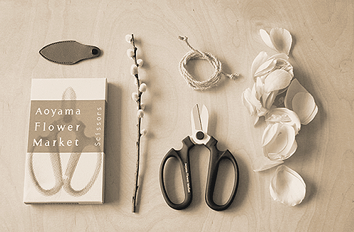

ABOUT US

라이프 스타일 브랜드 ‘FLOWER SHOP’은 꽃이 있는 삶, 꽃과 함께하는 여유로운 일상을 제안하는 브랜드로
꽃과 관련된 다양한 프로젝트를 진행합니다.
정기구독을 뜻하는 서브 스크립션과 상업을 뜻하는 커머스의 합성인 서브 스크립션 커머스 서비스는
정기적으로 신선한 꽃을 배달 해드리는 서비스입니다.
계절에 맞는 꽃을 선정하여 디자인한 상품이며
일상 속, 작지만 특별한 기쁨을 선사합니다.